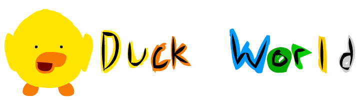
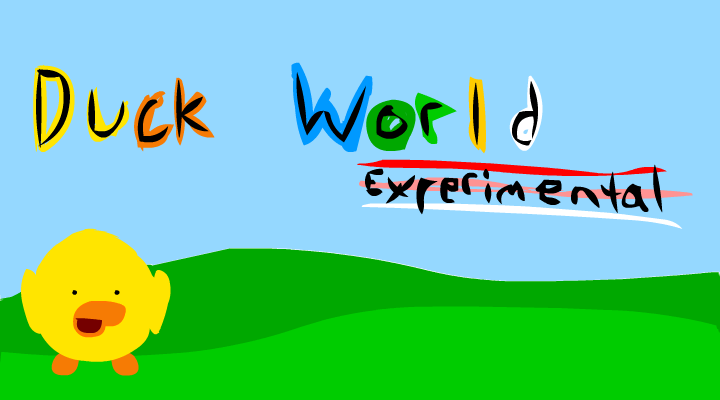
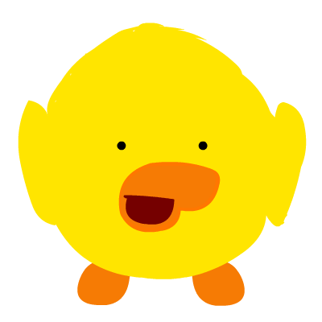

Waddle
Click anywhere on the grass and your duck waddles over. Trees get in the way, so walk around them.


Play NowFree to play in your browser. No download needed.
Duck World is a little online hangout where ducks waddle around together. Pick a name, walk to wherever you want, and say hi to whoever else is around.
It's still experimental, so expect rough edges and new stuff showing up often.
Jump in
Click anywhere on the grass and your duck waddles over. Trees get in the way, so walk around them.
Type a message, pick a quick phrase, or send an emote to everyone in the pond.
Press Q or hit the Quack button. Every duck in the pond hears you, louder when they're closer.